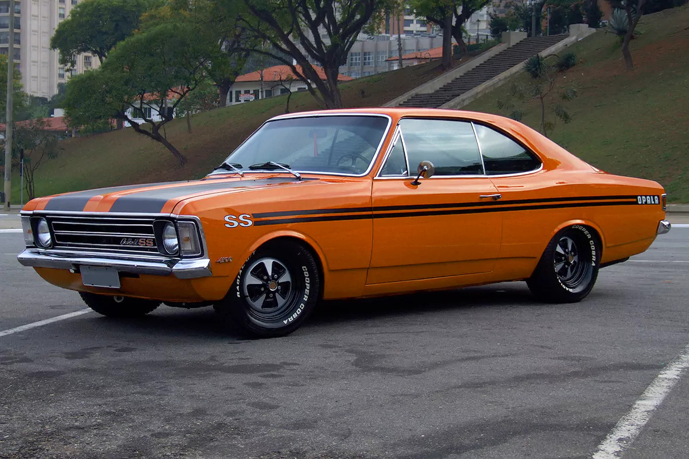
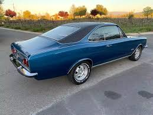
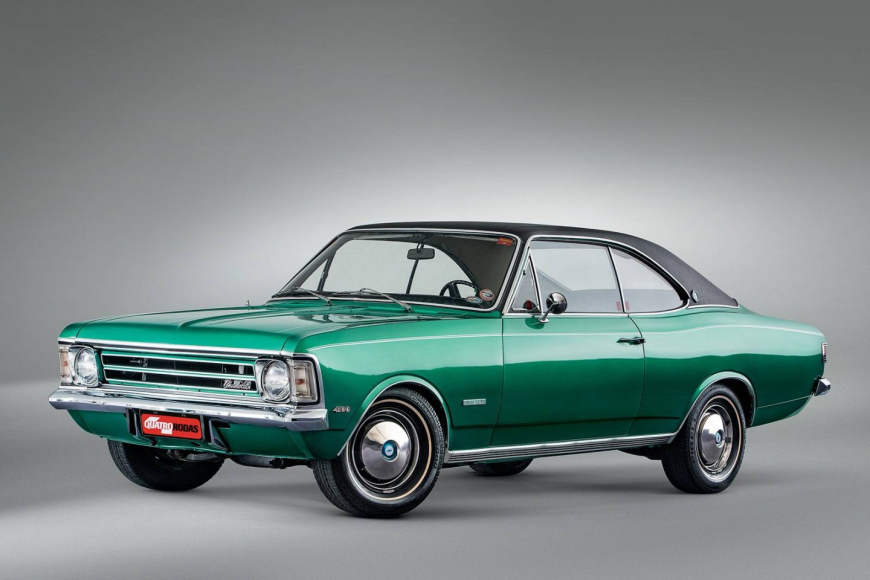
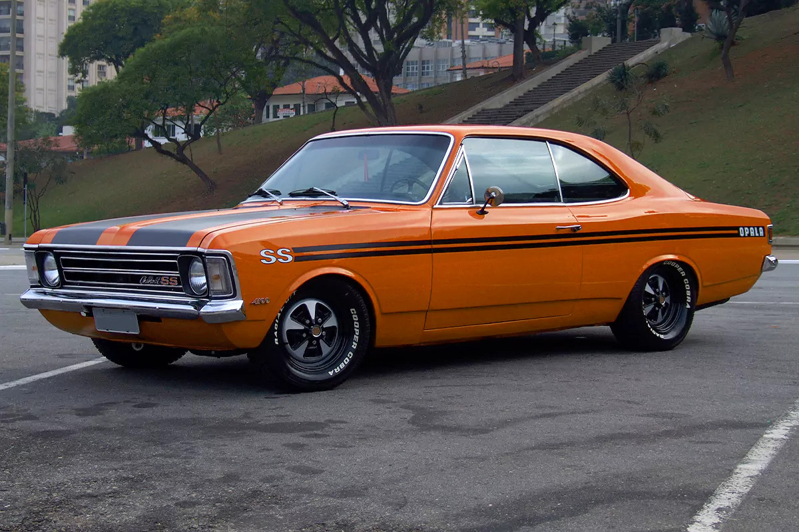
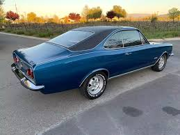
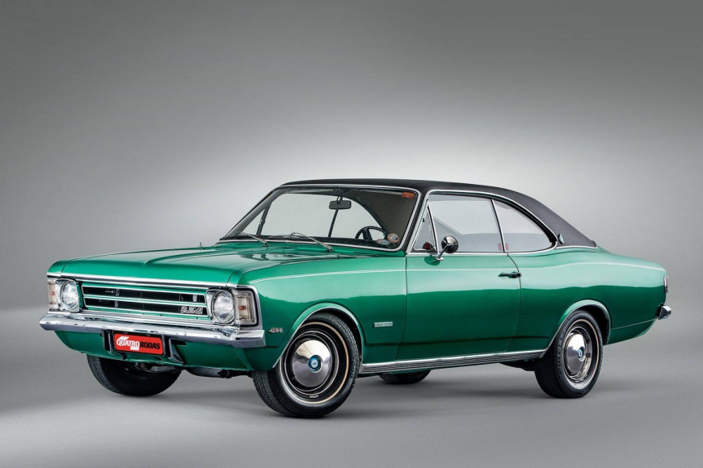

O Opala foi um dos carros mais emblemáticos da Chevrolet no Brasil, sendo produzido entre 1968 e 1992. Com design inspirado no Opel alemão, o Opala conquistou os brasileiros com sua robustez e conforto, tornando-se símbolo de elegância e potência.
Disponível inicialmente nas versões 4 cilindros e 6 cilindros, o modelo logo ganhou o coração de famílias e também de policiais e autoridades que viam no carro uma combinação ideal de desempenho e estilo. Suas linhas clássicas marcaram época.
Ao longo das décadas, o Opala ganhou diversas atualizações, sempre mantendo a identidade marcante. Modelos como o Comodoro e o Diplomata agregaram ainda mais sofisticação à linha, tornando-se objetos de desejo de muitos colecionadores até hoje.
O Opala também foi destaque nas pistas, com desempenho invejável em competições automobilísticas nacionais. Sua estrutura resistente e motor potente garantiram ótimos resultados nas corridas, contribuindo para sua reputação lendária.
Mesmo após o fim de sua produção, o Opala permanece vivo na memória dos apaixonados por carros clássicos. Encontros de colecionadores e eventos de carros antigos mantêm viva a história desse ícone da indústria automobilística nacional.
Preservar um Opala nos dias atuais é um ato de paixão. Muitos entusiastas restauram cuidadosamente cada detalhe, valorizando a originalidade e celebrando um período em que o design e a mecânica caminhavam juntos com elegância.
.jpg) 




